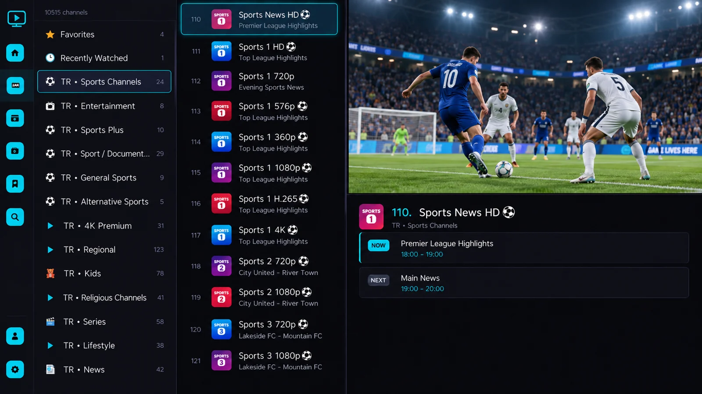
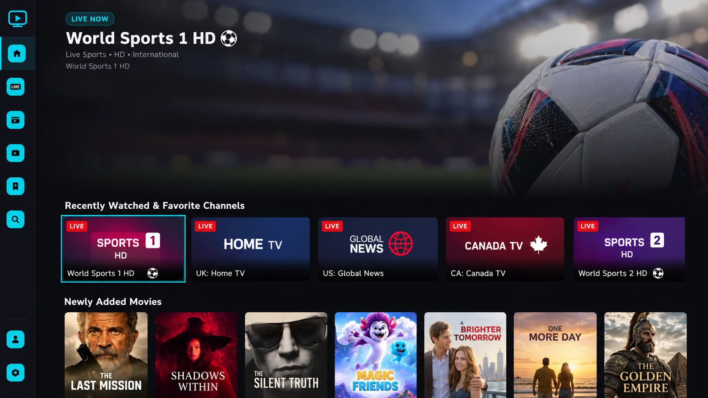
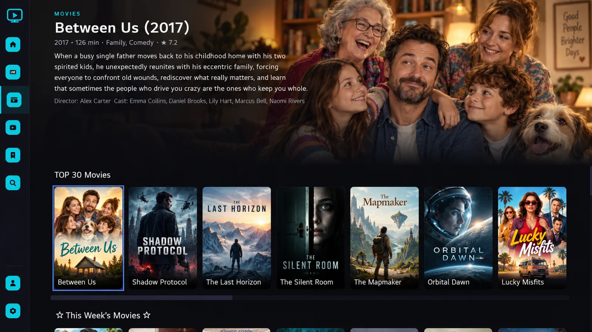
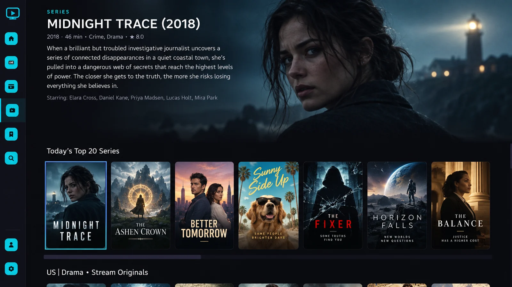
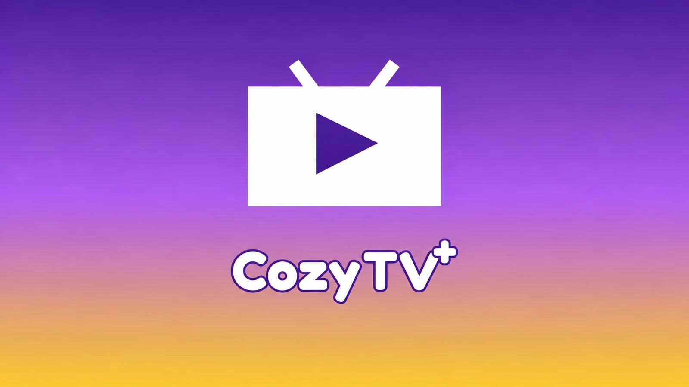

01 / LIVE TVFind your channel.
Find your channel.
Stay in the moment.
Browse channel groups, move through your list and preview a stream in one view. Programme information adds context when your source provides it.

Live TV, movies and series. Bring your own media together in a player made for the big screen.
LG Content Store release in preparation

Interface previews show illustrative content. CozyTV+ does not include channels, movies, series or playlists.
ONE PLAYER. YOUR WORLD.
From finding a live channel to exploring your collection, a clear layout keeps your next choice within reach.
Browse channel groups, move through your list and preview a stream in one view. Programme information adds context when your source provides it.

Explore your movie library through visual collections and featured titles. Open a movie to see its description and available details before you press play.

Give your series collection a place of its own. Browse titles and explore the seasons and episodes available from your connected source.

MADE FOR YOUR SOFA
Large artwork, clear focus and an interface designed around your remote.
Move between menus and collections with directional controls and a visible selection.
Dedicated spaces for live TV, movies and series, with favourites and recently watched content close by.
Connect a compatible M3U playlist or Xtream Codes source you are authorised to use. Content and metadata depend on that source.
TAKE A CLOSER LOOK
Select a screen to explore the interface in detail.
Preview artwork is for presentation only. Available titles, languages and programme information depend on your media source.
A SIMPLE START
The LG Content Store release is being prepared. A store link and supported-device details will be added when available.
Use your own compatible playlist or source credentials. CozyTV+ does not supply a playlist or content subscription.
Browse your channels and collections, choose a title and start watching content you have permission to access.
GOOD TO KNOW
No. CozyTV+ is a media player. It does not provide, host, sell or distribute channels, movies, series, playlists or IPTV subscriptions. You supply your own authorised sources.
The LG Content Store release is in preparation. The official download link will appear here once the application is available.
CozyTV+ supports compatible M3U/M3U8 playlists and Xtream Codes sources. Stream playback depends on the source format, your network and the capabilities of your TV.
Your connected sources determine the available content and metadata. The screenshots on this page are interface previews and are not an included content catalogue.
Visit our support page or email htok2005@gmail.com. Include your TV model, app version and a description of the issue. Do not send passwords or private playlist credentials.

HERE TO HELP
Questions about setup, activation or using CozyTV+ on your TV?
Contact support{kind=link}
{kind=link}
{kind=link}
{kind=link}
{kind=link}
{kind=link}